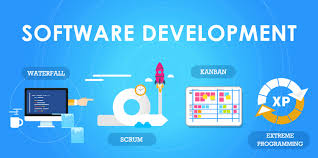

Software development is the process of conceiving, specifying, designing, programming, documenting, testing, and bug fixing involved in creating and maintaining applications, frameworks, or other software components. Software development is a process of writing and maintaining the source code, but in a broader sense, it includes all that is involved between the conception of the desired software through to the final manifestation of the software, sometimes in a planned and structured process.[1] Therefore, software development may include research, new development, prototyping, modification, reuse, re-engineering, maintenance, or any other activities that result in software products.[2]
The software can be developed for a variety of purposes, the three most common being to meet specific needs of a specific client/business (the case with custom software), to meet a perceived need of some set of potential users (the case with commercial and open source software), or for personal use (e.g. a scientist may write software to automate a mundane task). Embedded software development, that is, the development of embedded software, such as used for controlling consumer products, requires the development process to be integrated with the development of the controlled physical product. System software underlies applications and the programming process itself, and is often developed separately.
The need for better quality control of the software development process has given rise to the discipline of software engineering, which aims to apply the systematic approach exemplified in the engineering paradigm to the process of software development.
There are many approaches to software project management, known as software development life cycle models, methodologies, processes, or models. The waterfall model is a traditional version, contrasted with the more recent innovation of agile software development.